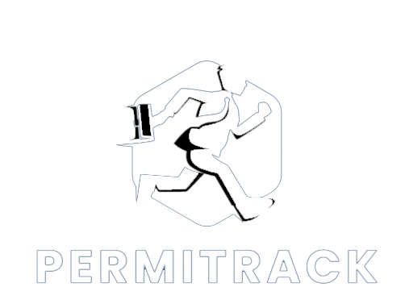

<div id="main-wrapper" data-layout="vertical" data-navbarbg="skin5" data-sidebartype="full"
    data-sidebar-position="absolute" data-header-position="absolute" data-boxed-layout="full">
    <header class="topbar" data-navbarbg="skin5">
        <nav class="navbar top-navbar navbar-expand-md navbar-dark">
            <div class="navbar-header" data-logobg="skin5">
                <a class="navbar-brand" href="/home">
                    <!-- Optional small icon -->
                    <b class="logo-icon ps-2"></b>

                    <!-- Logo container -->
                    <div class="logo-wrapper">
                        
                    </div>
                </a>
                <a class="nav-toggler waves-effect waves-light d-block d-md-none" href="javascript:void(0)">
                    <i class="ti-menu ti-close"></i>
                </a>
            </div>
            <div class="navbar-collapse collapse" id="navbarSupportedContent" data-navbarbg="skin5">
                <ul class="navbar-nav float-start me-auto">
                    <li class="nav-item search-box"> <a class="nav-link waves-effect waves-dark"
                            href="javascript:void(0)"><i class="ti-search"></i></a>
                        <form class="app-search position-absolute">
                            <input type="text" class="form-control" placeholder="Search &amp; enter"> <a
                                class="srh-btn"><i class="ti-close"></i></a>
                        </form>
                    </li>
                </ul>
                <ul class="navbar-nav float-end">
                    <li class="nav-item dropdown">
                        <a class="nav-link dropdown-toggle text-muted waves-effect waves-dark pro-pic" href="#" id="navbarDropdown" role="button" data-bs-toggle="dropdown" aria-expanded="false">
                            
                        </a>
                        <ul class="dropdown-menu dropdown-menu-end user-dd animated" aria-labelledby="navbarDropdown">
                            <a class="dropdown-item" style="cursor: pointer;" [routerLink]="['/myaccount']">
                                <i class="ti-user me-1 ms-1"></i> My Profile
                            </a>
                            <a class="dropdown-item" href="#">
                                <i class="ti-settings me-1 ms-1"></i> Account Setting
                            </a>
                            <div class="dropdown-divider"></div>
                            <a class="dropdown-item" style="cursor: pointer;" (click)="logout()">
                                <i class="fa fa-power-off me-1 ms-1"></i> Logout
                            </a>
                        </ul>
                    </li>
                </ul>
            </div>
        </nav>
    </header>
    <div class="d-flex flex-grow-1">
        <aside class="left-sidebar" data-sidebarbg="skin5">
            <div class="scroll-sidebar">
                <nav class="sidebar-nav">
                    <ul id="sidebarnav" class="pt-4">
                        <li class="sidebar-item"> 
                            <a class="sidebar-link" 
                                [routerLink]="['/home']" 
                                routerLinkActive="sidebar-link-active"
                                [routerLinkActiveOptions]="{ exact: true }"
                                aria-expanded="false">
                                <i class="mdi mdi-view-dashboard"></i>
                                <span class="hide-menu">Dashboard</span>
                            </a>
                        </li>
                        <li class="sidebar-item"> 
                            <a class="sidebar-link" 
                                [routerLink]="['/users/list']" 
                                routerLinkActive="sidebar-link-active"
                                [routerLinkActiveOptions]="{ exact: true }"
                                aria-expanded="false">
                                <i class="mdi mdi-chart-bar"></i>
                                <span class="hide-menu">Users List</span>
                            </a>
                        </li>
                        <li class="sidebar-item"> 
                            <a class="sidebar-link" 
                                [routerLink]="['/permissions/create']" 
                                routerLinkActive="sidebar-link-active"
                                [routerLinkActiveOptions]="{ exact: true }"
                                aria-expanded="false">
                                <i class="mdi mdi-chart-bubble"></i>
                                <span class="hide-menu">Create Permission</span>
                            </a>
                        </li>
                        <li class="sidebar-item"> 
                            <a class="sidebar-link" 
                                [routerLink]="['/permissions/list']" 
                                routerLinkActive="sidebar-link-active"
                                [routerLinkActiveOptions]="{ exact: true }"
                                aria-expanded="false">
                                <i class="mdi mdi-chart-bubble"></i>
                                <span class="hide-menu">Permissions List</span>
                            </a>
                        </li>
                    </ul>
                </nav>
            </div>
        </aside>
        <div class="page-wrapper flex-grow-1">
            <router-outlet></router-outlet>
        </div>
    </div>
    <footer class="footer text-center">
        © 2023 <a style="cursor: pointer;" [routerLink]="['/home']">PERMITRACK</a> | Admin Panel - All Rights Reserved
    </footer>
</div>
